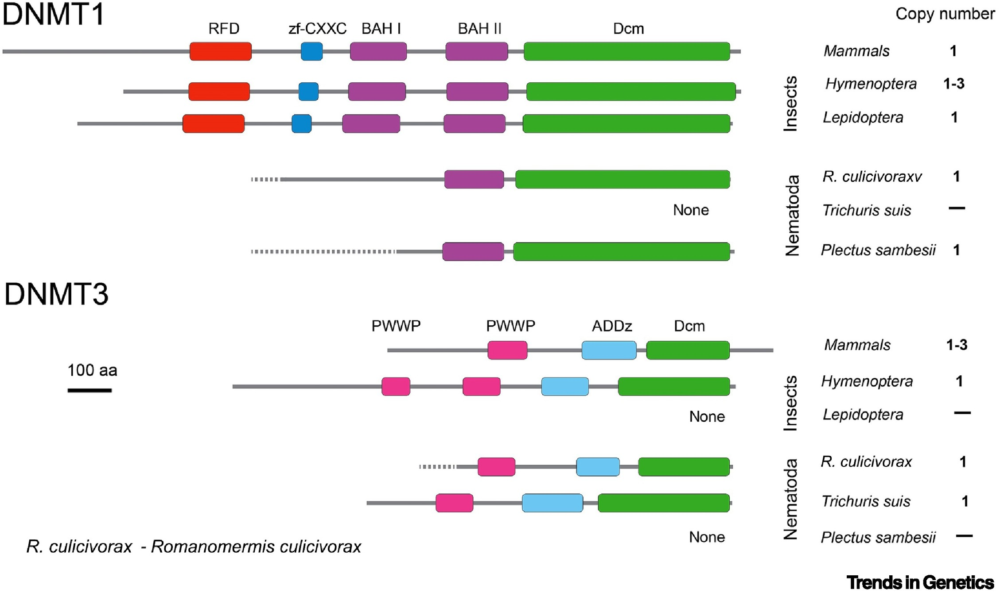

Primary paper
Is There a Relationship between DNA Methylation and Phenotypic Plasticity in Invertebrates?
TLDR Yeah seems like it
This paper highlights the importance of DNA methylation in invertebrates and suggests that its absence in certain genes contributes to phenotypic variation, which can enhance adaptive potential in fluctuating environments.
While DNA methylation has been extensively studied in mammals and plants, there is limited knowledge about this mechanism in invertebrates. The relative amount of DNA methylation varies significantly across taxa, with vertebrates exhibiting global methylation, while invertebrates show a wide range of methylation patterns. In invertebrates, DNA methylation patterns are associated with gene coding regions. Computational analysis has shown that genes predicted to be methylated in the germline have lower genetic diversity compared to unmethylated genes. Experimental studies in invertebrates, such as oysters and bees, have confirmed these findings and revealed that methylated genes are involved in critical biological processes, while unmethylated genes are associated with tissue-specific and inducible expression. The absence of germline methylation in genes involved in responding to environmental changes is proposed to facilitate phenotypic plasticity and increase adaptive potential. This absence of methylation allows for various transcriptional opportunities, including alternative transcription start sites, increased sequence mutations, and exon skipping. DNA methylation can act as a regulatory mechanism for controlling gene expression and influencing ecologically important traits. However, there are still unanswered questions regarding the mechanisms underlying the relationship between DNA methylation and transcriptional opportunities in invertebrates. Further research is needed to understand the specific roles of DNA methylation in different invertebrate species and their evolutionary implications.
The paper I chose
Without mechanisms, theories and models in insect epigenetics remain a black box
TLDR But what do we REALLY know about insect epigenetics?
The paper emphasizes the need to address the remarkable diversity of epigenomic systems in insects and nematodes by integrating genomic data with biochemical and single-cell-type analyses. It highlights the significant differences in epigenomic modification toolkits across taxa and suggests that they are utilized in a lineage-specific context, reflecting the evolutionary history of organisms.
The authors specifically focus on DNA methylation, which exhibits extraordinary diversity in animals, ranging from complete loss to expanded complements of DNMT. The study raises several unresolved questions regarding the evolutionary origins and organism-specific roles of DNA methylation systems, the transferability of data between different systems, and the distinguishing features of species without DNA methylation. Investigating organisms that have eliminated DNA methylation, such as Diptera, Placozoa, and certain Nematoda, may provide insights into the reasons behind this loss. The authors propose that eutelic or partly eutelic organisms, like Caenorhabditis elegans and tardigrades, eliminated DNA methylation to maintain strict development and enhance genome and transcriptome stability. The paper also highlights the unique case of DNA methylation in Hymenoptera, focusing on the honey bee. The honey bee’s DNA methylation toolkit exhibits variations, including gene duplication and alternative splicing, which may contribute to its phenotypic plasticity. Understanding the mechanistic aspects and functional importance of DNA methylation in insects, particularly in relation to development, behavioral maturation, and restricted gene expression, is crucial. The study acknowledges that the function of DNA methylation in insects remains poorly understood and emphasizes the need for high-resolution technologies to evaluate its involvement in development and behavioral maturation, especially in the honey bee queen-worker developmental divide. Additionally, the epigenetic control of gene expression in imaginal discs during insect development and the role of nutritional stimuli in reprogramming developmental processes are discussed as important areas of investigation.
Comparison
One thing I find compelling similar about these two reviews is the call toward a better mechanistic understanding of how methylation impacts gene expression. However, I would say the Roberts and Gavery paper focuses more on functional description of the processes affected by methylation, while the Maleszka and Kucharski paper drives home the point that we cannot truly understand what methylation is actually doing without the explicit evaluation of pathways. Acknowledging that these two papers are written almost 10 years apart, it seems that some of this difference may be due to the progress in the field over the past decade. Using GO terms as a means to describe the potential functions of methylated areas appears to be the norm in most studies related to DNA methylation. It seems like we might be headed into a new era for invertebrates, born of research progress, in which we must look closer at mechanisms, similar to methylation studies completed in biomedical research, to truly test our hypotheses about DNA methylation in invertebrates. It’s also worth mentioning that both of these papers mention the transcriptional potential of unmethylated areas within the genome. Both papers likely operate under much of the same conceptual framework and ask questions about the role of DNA methylation in environmental response and preservation of necessary cellular functions (i.e. metabolism). However, the Maleszka and Kucharski paper does take specific issue with considering the functionality of all DMNTs as the same across taxa, as illustrated in Figure 1:

Figure 1. DNA methyltransferase (DNMT) gene copy number and domain structure in selected organisms.
Application to my research
This particular conservation about the addition of mechanisms seems particularly apt to my research, especially since I am trying to better understand the functions of lncRNAs. I’ve noticed that in framing research questions to describe the potential function of less studied epigenetic factors, clinging to a specific pathway, mechanism, or predicted response to the environment seems to be the clearest path forward. I’m also interested in looking at the interplay between methylation and lncRNAs, and I think the CEABiGR oyster dataset provides the perfect opportunity for this.